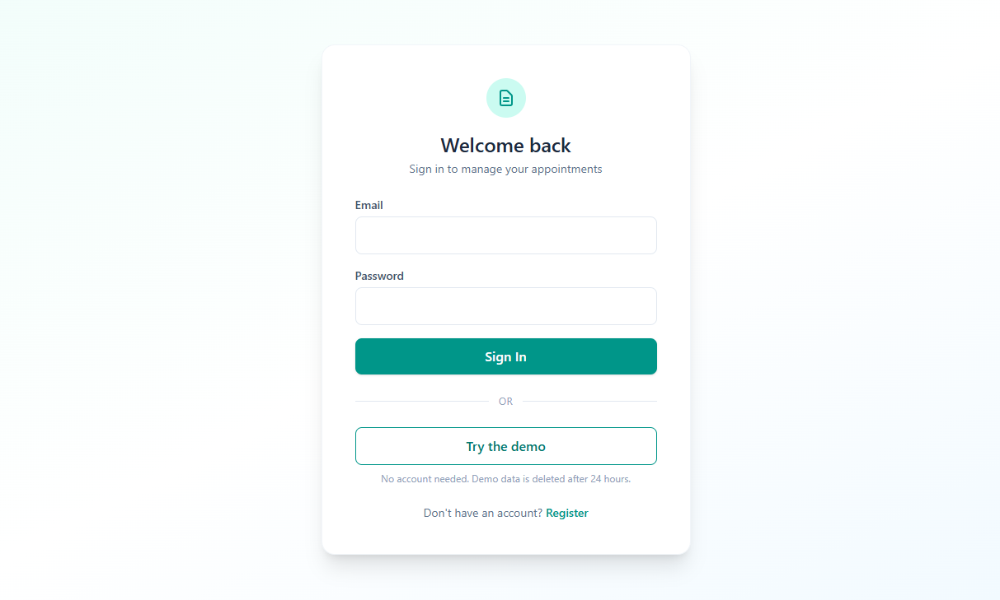
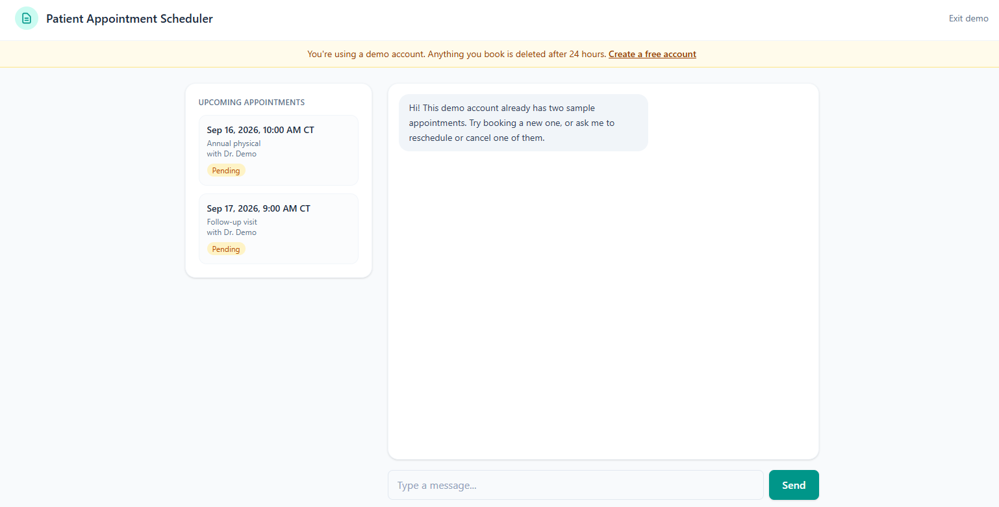

Field Service Work-Order App - Software Engineering Residency
As Frontend Lead on a cross-functional team, I helped build a cross-platform mobile app for an enterprise client in the oil and gas industry, replacing a paper-based work-order process with a single in-app workflow. Field workers could receive, complete, and submit work orders on the go, with offline sync kicking in automatically once they reconnected, and GPS-based geofencing to confirm they were actually on-site. Over a 10-week engagement, I coordinated with Software Engineering, Data Analytics, Cybersecurity, and QA tracks in Agile sprints under senior engineer mentorship, then presented the finished app to a live audience and handed off a production-ready proof of concept to the client.
Technologies Used:
- TypeScript & React Native + Expo
Built under NDA for an enterprise client - code and demo are not publicly available.
Patient Apt Scheduler


A full-stack scheduling application that lets patients book appointments with their healthcare provider through an AI-powered chat interface. Instead of filling out a form, the patient just talks to the assistant, it collects the date, time, and reason for the visit, then calls a backend tool to actually create the appointment. The assistant is timezone-aware, checks requested times against clinic hours, and confirms with the patient before cancelling anything. Patients log in to track their upcoming appointments on a live-status dashboard. Backed by 40+ automated tests covering booking logic, auth, and double-booking prevention, running through GitHub Actions on every push. Deployed end-to-end: FastAPI on Render, PostgreSQL on Neon, React on Vercel.
Technologies Used:
- JavaScript & React
- Python & FastAPI
- PostgreSQL & SQLAlchemy
- AI: Mistral API
- Pytest & GitHub Actions
MC Search Tool

In healthcare customer service, every second spent hunting for a member's record is a second not spent helping them, I ran into that exact friction daily while working in healthcare claims management, so I built this on my own time to fix it. It gives CS teams a fast, unified way to find members across multiple client organizations without jumping between systems.
Technologies Used:
- Python & Flask
- SQLite & SQLAlchemy
- HTML & CSS
Proposal Tracker

A collaborative internal tool built with a small team of fellow bootcamp alumni now working together as a freelance collective called DevSphereLabs. It captures inbound project inquiries, generates branded PDF proposals, and tracks won deals on a kanban board. Backend is Flask, chosen deliberately over a full Next.js stack so the team's learning time goes toward the frontend instead of splitting focus on a deadline project.
Technologies Used:
- TypeScript & Next.js
- Python & Flask
Daily Daisy Planner


I wanted a planner that felt personal, so I built daily, weekly, and monthly views with persistent user authentication, letting each user pick up their planner right where they left off. Current weather displays alongside the planner based on the user's location, so your day-at-a-glance actually reflects the day outside. Deployed end-to-end: Flask on Render, React on Vercel.
Technologies Used:
- JavaScript & React
- Python & Flask
- SQLite & SQLAlchemy
- OpenWeather API
Mechanic Shop API

A backend-focused project I built to get real practice with production-grade API architecture, a RESTful API for managing automotive repair shop operations: customers, mechanics, vehicles, and service tickets. Backed by a normalized PostgreSQL database, with a full Pytest suite running automatically through GitHub Actions on every push, and a Postman collection documenting every endpoint for anyone testing or integrating with the API.
Technologies Used:
- Python & Flask
- PostgreSQL & SQLAlchemy
- JavaScript & React
- Pytest & GitHub Actions